근거를 먼저 확인합니다.
인터뷰, 시연 기록, 실제 화면, 운영 문서를 구분해 사용합니다. 확인하지 못한 성과는 결과처럼 쓰지 않습니다.
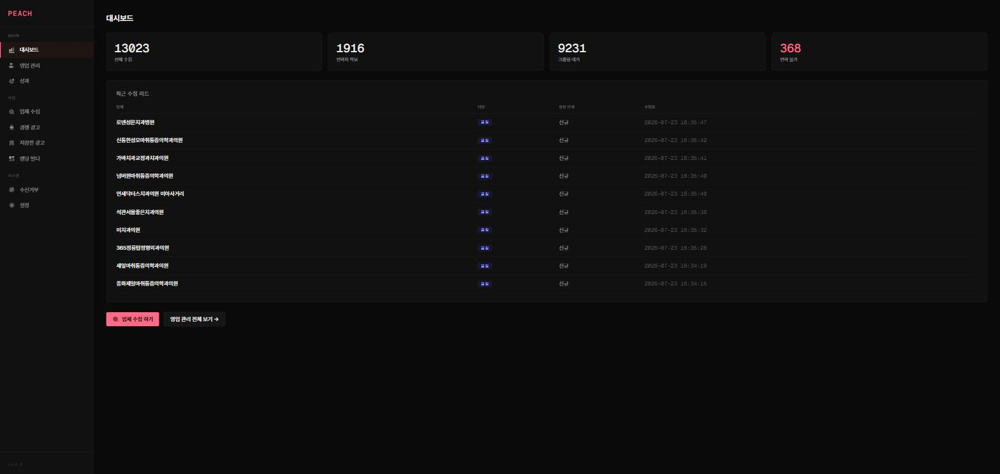

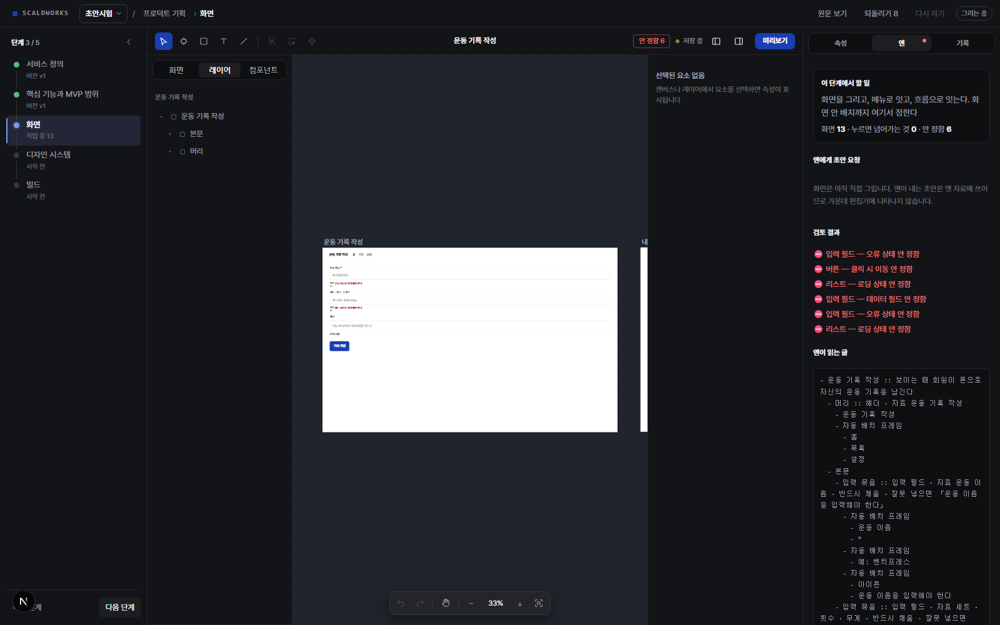
2026 SELECTED WORKS
서비스·프로덕트 기획 포트폴리오
CONTENTS
ABOUT
2020년부터 웹·앱 서비스를 기획했습니다. 사용자 조사와 정보구조, 화면 설계뿐 아니라 현장 운영과 정책, 구현 이후의 수정 범위까지 함께 다뤄 왔습니다.
대표 · 프로젝트 PM
매니저 · 서비스기획
UX/UI 파견
인터뷰, 시연 기록, 실제 화면, 운영 문서를 구분해 사용합니다. 확인하지 못한 성과는 결과처럼 쓰지 않습니다.
문제와 기능을 나열하기보다 어떤 관찰로 우선순위와 흐름을 바꿨는지 설명합니다.
예약 이후의 현장 운영, 데이터 저장, 승인과 복구처럼 제품이 실제로 돌아가기 위한 조건을 설계합니다.
이 문서는 프로젝트별로 확인 가능한 범위와 남아 있는 증거를 기준으로 구성했습니다.
CAREER RECORD APP · 2021
토핑업은 취업·이직 준비자가 다른 사람의 준비 루틴을 참고하고, 자신의 일정으로 가져와 관리하는 커리어 기록 앱입니다.
2021.12 · IN-PERSON INTERVIEWS
취업 준비자와 이직 준비자 20명을 직접 만났습니다. 세부 과제는 달랐지만 다른 사람의 준비 방식을 보고 싶다는 요구가 반복됐습니다.
직군과 준비 단계가 다른
취업·이직 준비자 대면 인터뷰
01첫 계획을 세울 판단 기준이 부족함
02비슷한 목표를 준비한 사람의 과정을 참고하고 싶음
03목표와 여러 일정을 하나의 흐름으로 관리하기 어려움
응답자별 연령·경력 수치는 원본 라벨이 서로 맞지 않아 증거에서 제외하고, 반복된 문제와 발화만 사용했습니다.
INTERVIEW 01“앞으로 필요한 기술이 무엇인지 판단하기 어렵다. 다른 사람은 어떻게 준비하는지 알고 싶다.”
INTERVIEW 02“필요한 정보가 여러 곳에 흩어져 있어 전체 과정을 파악하기 어렵다.”
의지가 부족한 것이 아니라, 무엇부터 적고 어떤 순서로 준비해야 하는지 판단할 기준이 부족했습니다.
FROM FINDINGS TO STRUCTURE
인터뷰 문장을 곧바로 기능 목록으로 옮기지 않고, 사용자가 준비 과정을 이해하고 시작할 수 있는 기준으로 번역했습니다.
OBSERVATION
DECISION
월간 일정과 세부 과제를 한 화면에서 확인하도록 구성했습니다.
OBSERVATION
DECISION
비슷한 직무를 준비하는 사람의 계획을 탐색하고 참고하게 했습니다.
OBSERVATION
DECISION
진행 상태와 완료 과정을 개인 기록으로 축적하게 했습니다.
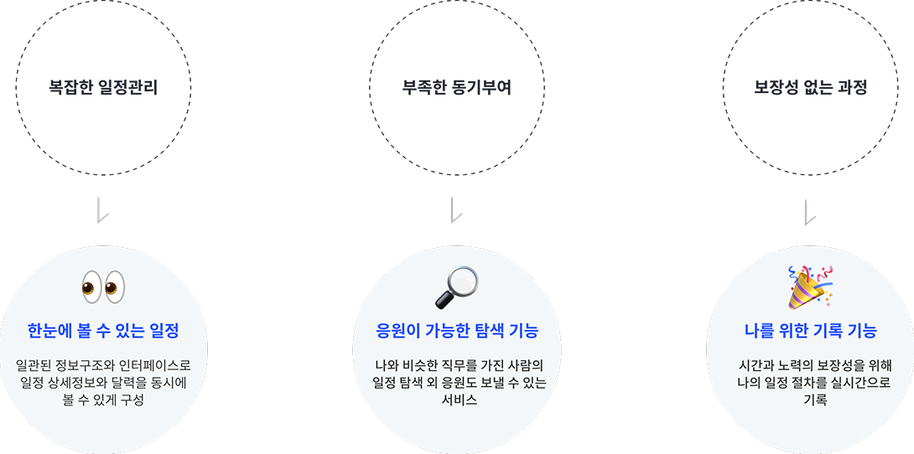
ENTRY FLOW
빈 생성 화면을 먼저 보여주면 무엇을 적어야 할지 모르는 문제를 다시 사용자에게 돌려주게 됩니다.
처음부터 완성된 계획을 요구합니다.
참고할 구조를 고르고 자신의 상황에 맞게 수정합니다.
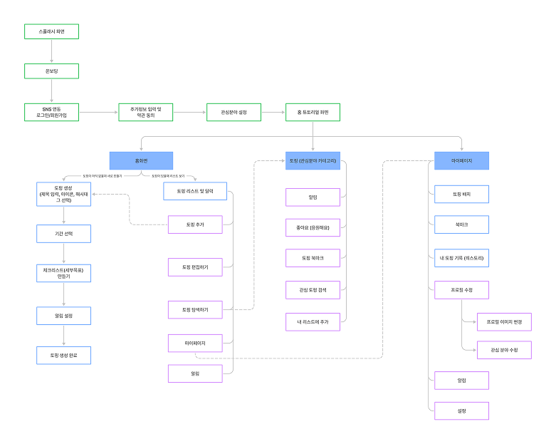
원본의 ‘첫 토핑 생성 성공률 증가’는 측정된 성과가 아니라, 첫 진입 이탈을 줄이기 위한 설계 가설로 정리했습니다.
THE ‘TOPPING’ UNIT
포트폴리오 제작, 면접 준비, 자격증 학습처럼 서로 연결된 여러 일정을 하나의 준비 단위로 묶어 목적과 순서를 보존했습니다.
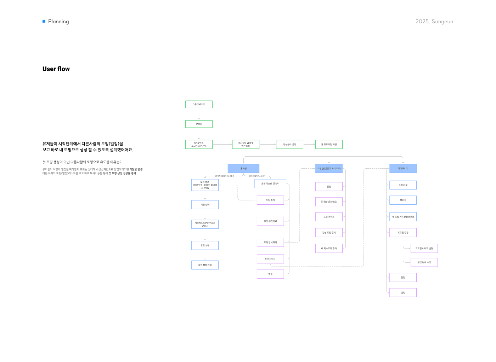
HOME직접 토핑을 만드는 경로와 다른 토핑을 탐색하는 경로를 분리했습니다.
MY PAGE북마크, 내 토핑 기록, 프로필·관심 분야 수정, 알림과 설정을 묶었습니다.
RECORD완료한 일정은 일회성 체크가 아니라 다음 준비에 참고할 개인 기록으로 남깁니다.
SCREEN INTENT
이번 프로젝트는 사용자 조사, 서비스 구조, 사용자 흐름, 와이어프레임까지 진행했습니다.
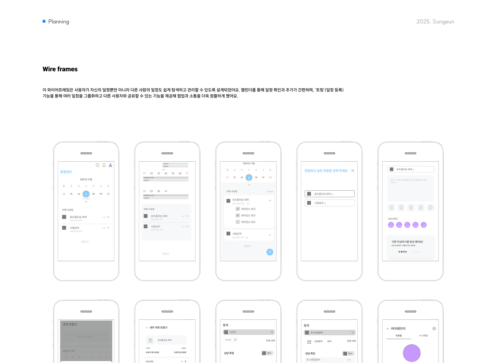
월간 캘린더한 달 일정과 오늘의 세부 과제
일정 상세한 토핑 안의 과제와 진행 상태
토핑 생성기간과 세부 목표 설정
토핑 선택기존 계획을 출발점으로 사용
기록 완료완료한 준비 과정을 개인 기록으로 저장
직접 생성과 복사 중 어떤 경로가 첫 토핑 완성에 유리한지, 가져온 계획에서 무엇을 수정해야 하는지 확인해야 합니다.
VALUES-FIRST DATING · 2025
Flowing은 사진과 조건을 먼저 비교하는 대신, 상대의 취향·일상·가치관을 읽은 뒤 대화를 신청하도록 설계한 소개팅 서비스입니다.

WHAT I HEARD
초기에는 외모 중심 매칭에 대한 피로를 문제로 보았습니다. 인터뷰에서는 연결 이후 첫 메시지에 사용할 맥락이 부족하다는 문제가 더 구체적으로 드러났습니다.

INTERVIEW 01“상대가 어떤 가치관을 가지고 어떤 삶을 사는지, 조금 더 많은 정보가 있었으면 좋겠어요.”
INTERVIEW 02“새로운 만남을 즐기지만, 비슷한 결이나 취미를 함께 즐길 수 있는 사람을 더 선호해요.”
ASSUMPTION - FINDING - DECISION
당장 연애 상대를 찾는 사용자뿐 아니라, 맞는 사람이라면 천천히 알아가고 싶은 사용자까지 탐색 경험에 포함했습니다.
사진을 보는 방식 자체를 주된 문제로 예상했습니다.
연결 이후 첫 대화의 소재가 없어 관계가 멈췄습니다.
일상·취향·가치관을 먼저 보고 대화를 신청하도록 했습니다.
EXPLORE빠른 선택보다 탐색 시간을 확보합니다.
CONTEXT상대의 일상과 취향을 대화 소재로 사용합니다.
NO FILTER START조건을 설정한 뒤 결과를 받는 필터 화면에서 시작하지 않습니다.
NOT REMOVED, REORDERED
나이·거리·키는 프로필의 보조 정보로 남겼습니다. 사진도 존재하지만 매칭 전에는 흐리게 처리하고, 피드와 취향 정보를 먼저 확인하게 했습니다.

조건을 삭제한 서비스라고 표현하지 않았습니다.
사진과 조건을 첫 판단 기준에서 밀어내고, 피드와 취향 정보를 탐색의 출발점에 두었다.
FEED - PROFILE - CONVERSATION REQUEST
프로필을 신상정보 표가 아니라 대화 소재를 찾는 화면으로 구성했습니다.

01 · FEED상대의 일상과 관심사를 먼저 봅니다.
02 · PROFILE자기소개, 매너지수, 음악·영화·여행 취향을 확인합니다.
03 · REQUEST확인한 콘텐츠를 언급하며 대화를 신청합니다.
LIKE IS NOT A CHAT
대화를 신청해도 바로 채팅이 열리지 않습니다. 상대가 메시지와 프로필을 확인한 뒤 수락하도록 별도 단계를 두었습니다.
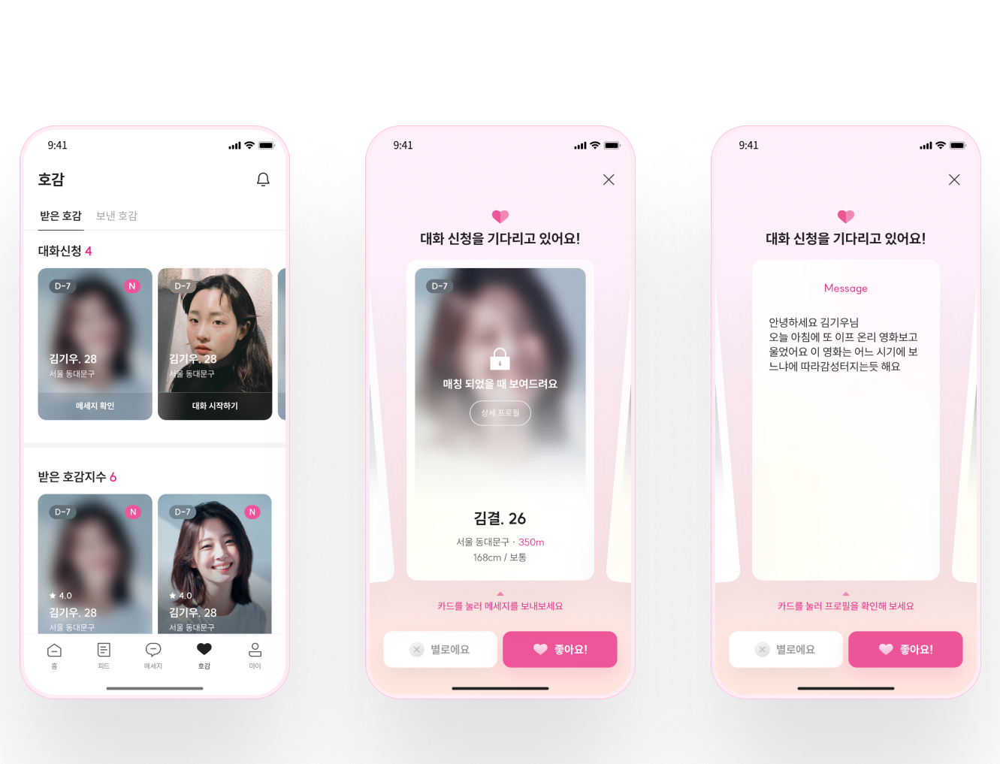
문제 정의와 화면 설계까지 진행한 콘셉트 프로젝트입니다. 실제 출시와 대화 시작률·지속률은 확인되지 않았습니다.
PET BATH SERVICE · 2024.10-12
2024년 10월 (주)멸치에 서비스기획 매니저로 합류해 워시앤펫의 초기 기획을 맡았습니다. 장치형 목욕의 현장 가능성을 시연하고, 예약부터 인계까지 이어지는 정책과 운영 문서를 함께 만들었습니다.
실제 장치와 목욕 순서 확인
경쟁사 조사, 세 갈래 예약 플로우
하네스와 체결 순서 변경 기록
서비스 구성과 운영 범위 정리
약관, 프로세스, 매뉴얼, 웹 기획
재직 시작일 2024.10.29 이후 작성된 자료만 사용했습니다. 입사 전 리뉴얼 자료와 공공배달 문서는 본인 작업에서 제외했습니다.
2024.10.31 · DOG 1 · GUARDIAN 1
설명, 하네스 체결, 고정, 세척, 건조를 실제 순서로 확인한 뒤 15분 동안 의견을 들었습니다.

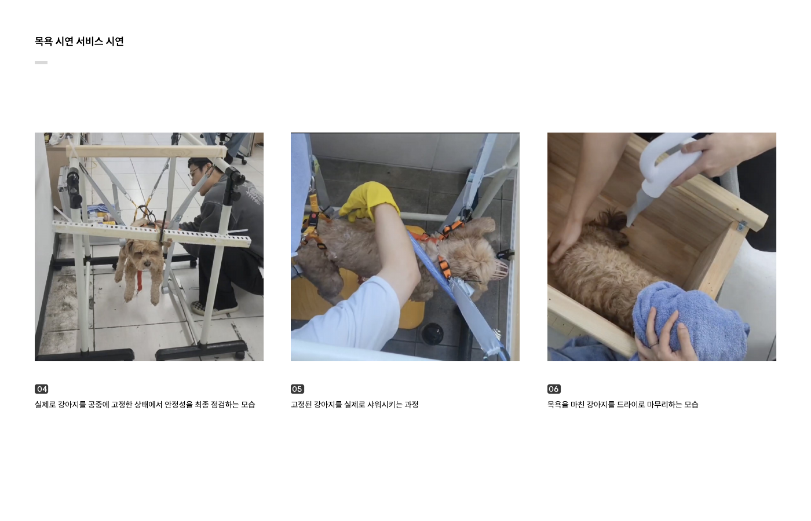
척추와 슬개골에 부담이 갈 수 있는 매다는 방식
움직임이 제한된 상태에서 느끼는 불편
이중모 안쪽까지 충분히 씻기는지에 대한 우려
가격이 낮아도 깨끗함과 편안함이 보장되지 않으면 선택하기 어려움
다음 검토의 중심을 가격과 속도에서 안전성·세척 품질·고정 방식으로 옮겼습니다.
참여 규모가 작은 현장 확인이므로 일반 사용자 전체의 결과처럼 확대하지 않았습니다.
DOCUMENT COMPARISON · 10.31 / 11.19
앞·뒤를 체결하는 하네스와 받침대 위에서 체결을 마친 뒤 지지판을 빼는 과정이 문서에 남아 있습니다.
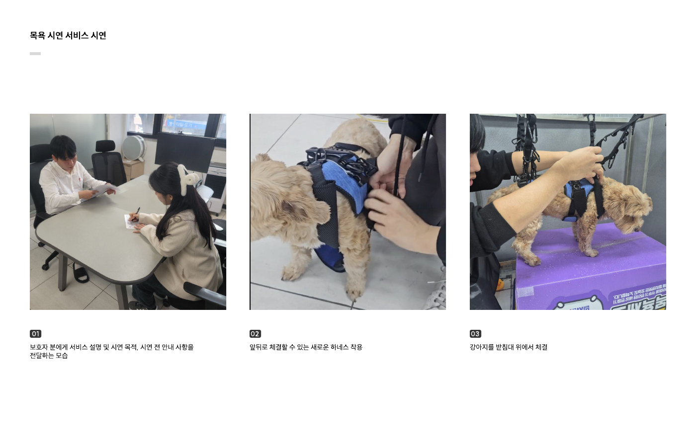
두 기록을 비교하면 고정 방식과 절차가 달라졌습니다.
NOT CONFIRMED1차 피드백이 직접 원인이었는지, 변경 뒤 안전성이 최종 검증됐는지는 단정하지 않았습니다.
THREE ENTRY PATHS
신규 사용자에게 가입을 강제하지 않고, 재방문자에게는 저장된 반려동물 정보를 다시 쓰지 않게 했습니다.
프로필과 건강·행동 특성을 저장해 다음 예약의 입력을 줄임
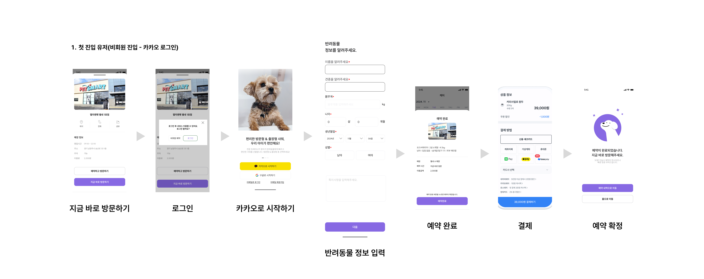
가입 없이 반려동물 정보와 날짜·시간을 입력해 예약 가능
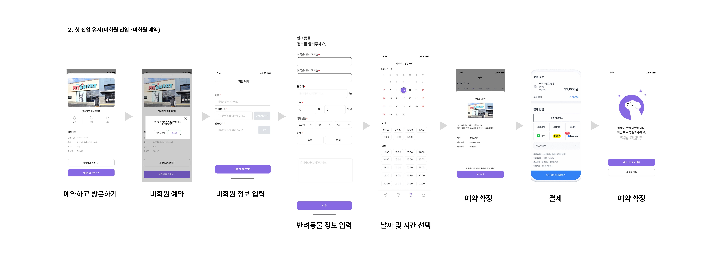
저장된 반려동물을 불러와 날짜와 시간 선택부터 시작

예약 플로우 기획안의 상품명과 가격은 샘플이므로 실서비스 정보로 사용하지 않았습니다.
FROM BOOKING TO HANDOVER
앱 화면과 매장 업무를 하나의 흐름으로 연결하고, 진행할 수 없는 조건과 사고 대응도 함께 정의했습니다.
예약 고객과 현장 방문 고객을 구분합니다.
QR로 약관과 반려동물 정보를 확인합니다.
체중, 상처, 스트레스, 공격성을 확인합니다.
하네스와 장치 상태를 확인하며 진행합니다.
상태에 따라 건조 방식을 선택합니다.
특이사항을 전달하고 결제와 기록을 마칩니다.
건강 이상 또는 장비 고장즉시 중단 - 보호자 안내 - 필요 시 병원 이동 - CCTV와 사고 기록
SOURCE 01서비스프로세스_1128.docx
SOURCE 02비상 상황 매뉴얼_1128.docx
SOURCE 03매장 운영 매뉴얼 정책서_1128.docx
WHAT STOPS OUTSIDE THE SCREEN
시연과 예약 플로우 외에 현장에서 같은 기준으로 판단하기 위한 문서를 작성했습니다.


01서비스정책서이용 조건 · 취소 · 환불 · 책임 범위
02고객동의 약관건강 상태 · 위험 고지 · 보호자 동의
03서비스 프로세스접수부터 인계까지 역할과 순서
04매장·장비·위생 매뉴얼점검 · 세척 · 소모품 · 기록
05비상 상황 매뉴얼중단 · 안내 · 병원 이동 · 사고 기록
06웹사이트 기획서비스 설명과 네이버 예약 연결
보여줄 수 있는 결과는 공개 출시나 매출이 아니라, 두 차례 시연과 문서를 통해 현장에서 필요한 판단 기준을 구체화한 과정입니다.
KOREAN OFFICIAL STORE · 2023-2024
브랜드의 넓은 여백과 영문 컬렉션 정체성은 유지하고, 국내 사용자의 탐색 구조는 제형·향 계열·컬렉션·선물 상황으로 재구성했습니다.
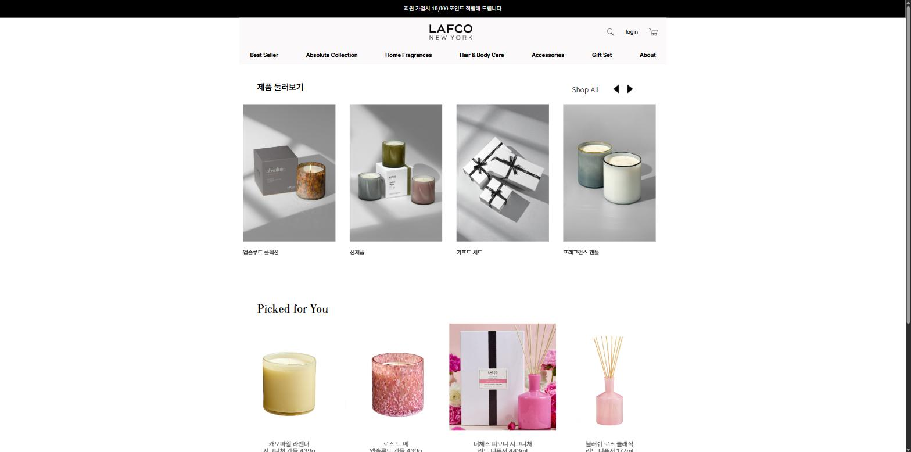
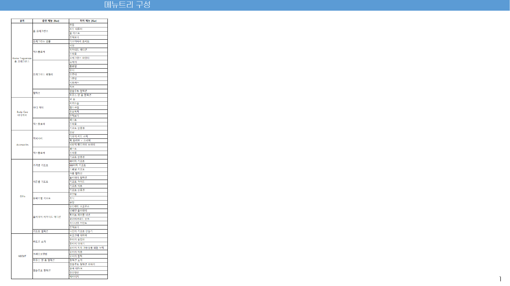
WHEN THE SEARCH TERM IS UNCLEAR
선호 향, 공간 분위기, 라이프스타일, 여행 취향을 차례로 묻고 세 가지 향을 추천하는 흐름을 기획했습니다.
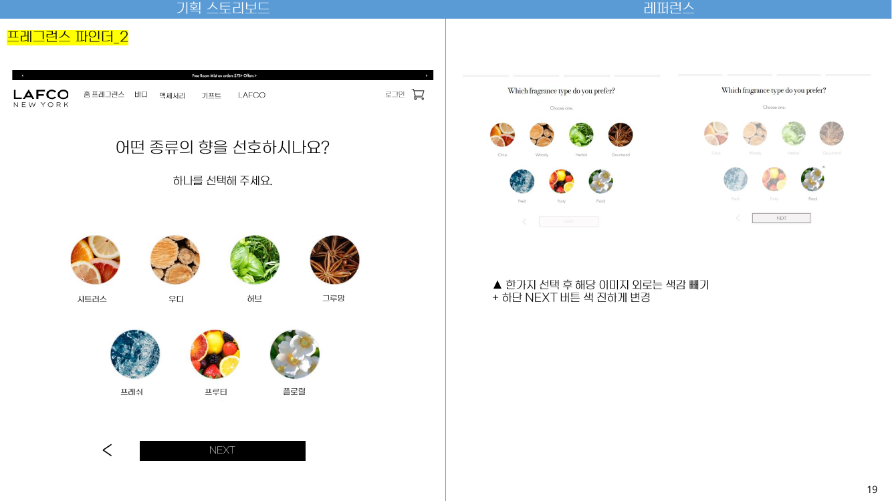
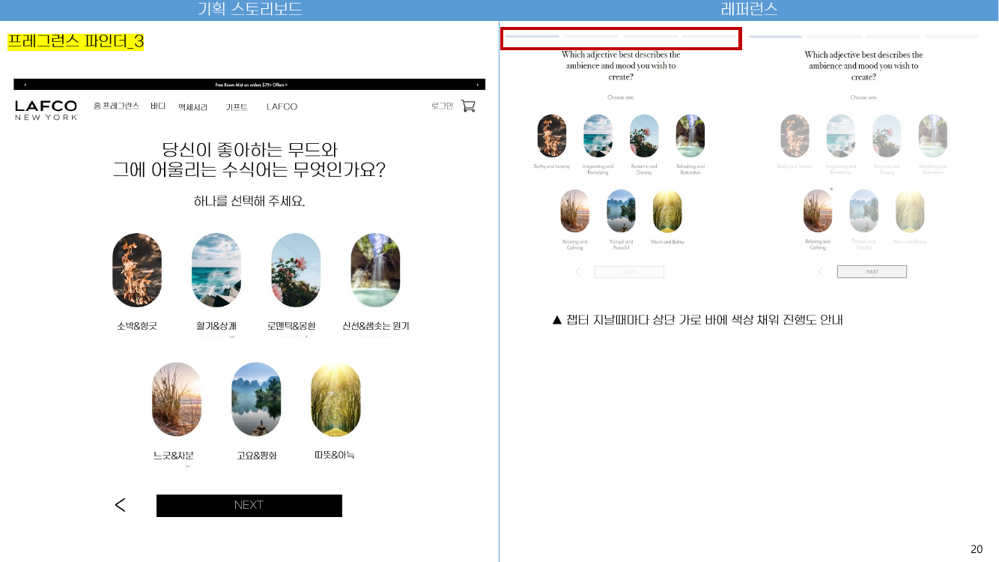
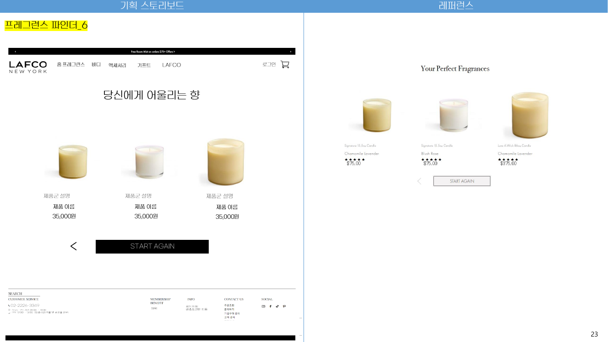
Fragrance Finder는 2023년 12월 기획안에 포함된 산출물입니다. 실제 출시 여부는 확인하지 못해 운영 기능으로 표기하지 않았습니다.
DISCOVERY TRIO
향 1·향 2·향 3 선택값이 한 세트의 주문 정보로 넘어가도록 커스텀 기능을 구현했습니다.
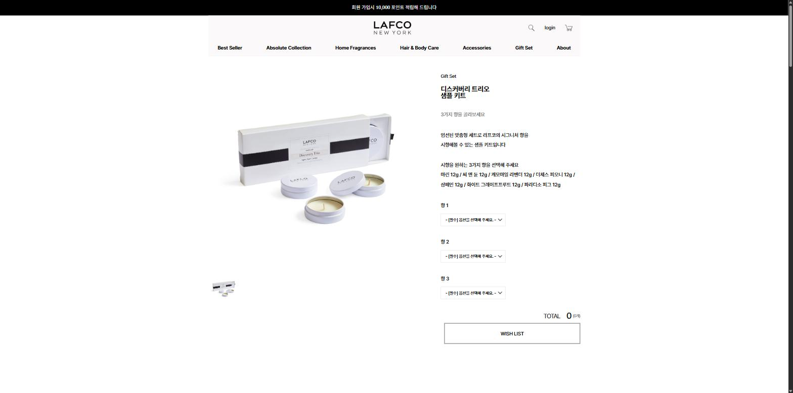
선물하는 사람은 하나의 향을 맞혀야 하는 부담을 줄이고, 받는 사람은 여러 향을 비교할 수 있습니다.
전환 성과가 아니라 상품의 판매 방식을 쇼핑몰의 선택·주문 기능으로 옮긴 구현 사례입니다.
DIRECT CLIENT · 2023
Notebook·Diary·Calendar·Pen 같은 익숙한 분류를 없애지 않고, 홈의 FROM YOU에 상황과 의도 기반 진입점 7개를 추가했습니다.
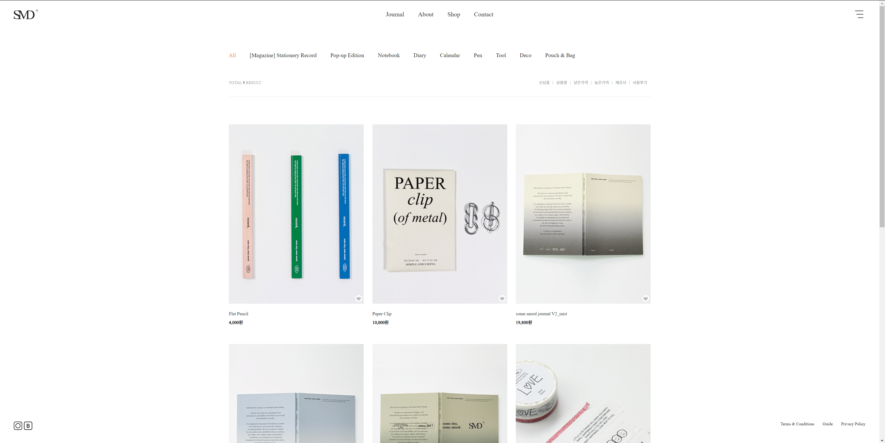
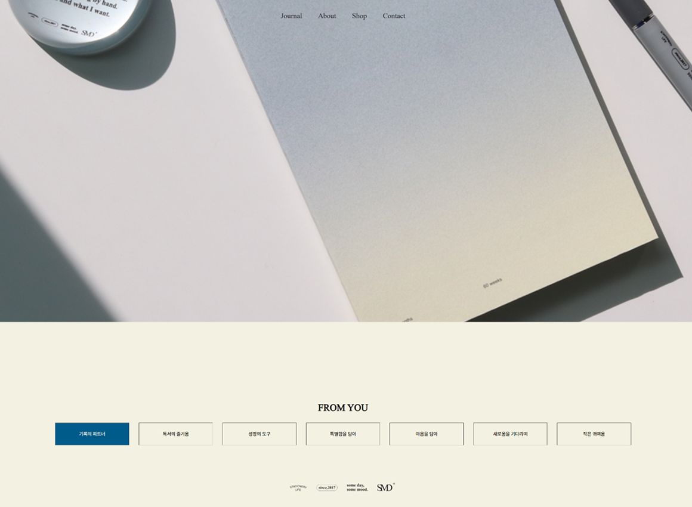
감성 문장과 사진은 첫 관심을 만들고, 품목 카테고리와 버튼은 실제 구매 탐색을 맡도록 역할을 나눴습니다.
HOME - LIST - DETAIL - STORY
감성적인 첫 화면과 구매가 일어나는 상품 목록·상세, 협업 아카이브에 같은 글꼴·여백·사진 규칙을 적용했습니다.
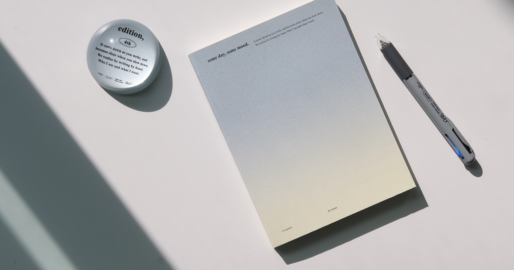
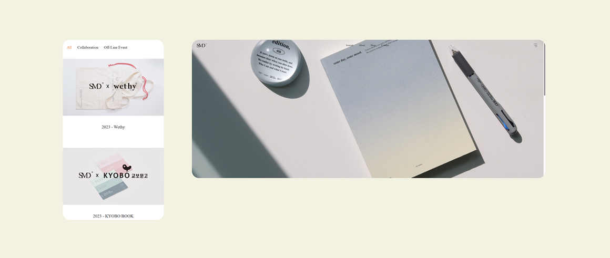
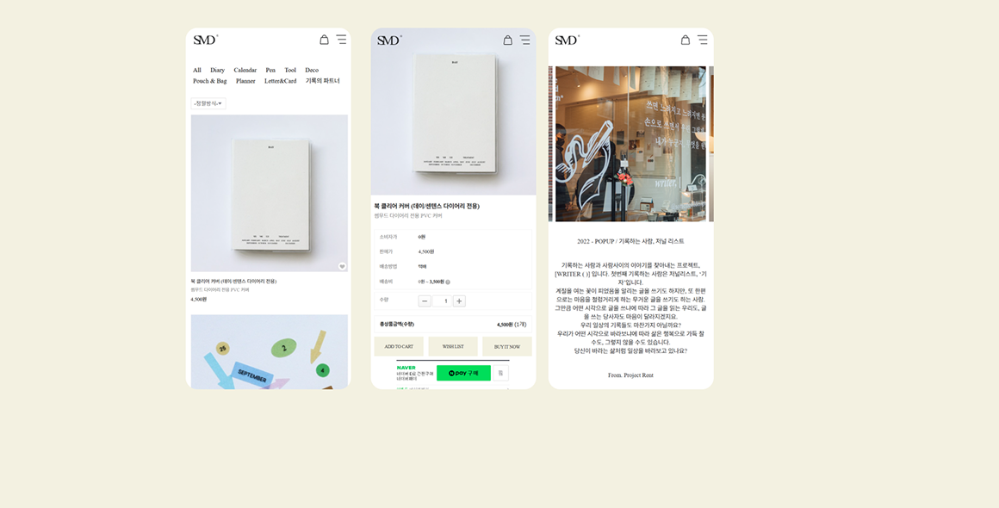
BRAND SPIN-OFF · 2021-2022
하늘하늘에서 분리된 언더웨어 브랜드 LAiKiN의 오픈 페이지와 CAFE24 쇼핑몰 구축을 맡았습니다.
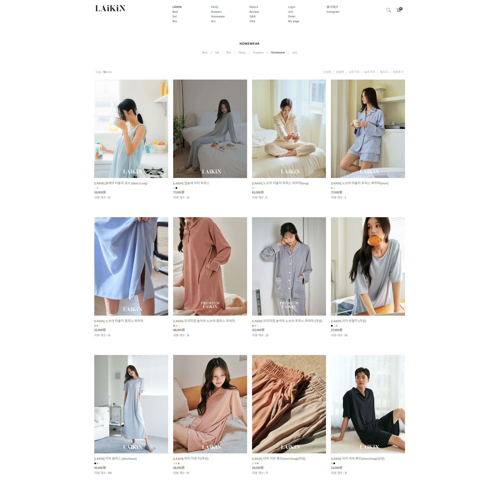
Navigation상품군 · 고객지원 · 계정 · 주문
Commerce카테고리 · 목록 · 상세
Publishing오픈 페이지와 공통 화면
PlatformCAFE24
구축 이후 화면이 변경됐을 수 있어 당시 구조를 확인하는 보관본으로 사용했습니다.
ONE YEAR OF MAINTENANCE
사이트 전반의 SEO·속도 테스트를 맡고, 이후 1년간 유지보수를 진행했습니다.
큰 이미지 중심의 브랜드 표현을 보존했습니다.
먼저 필요한 자원과 뒤로 미룰 자원을 구분했습니다.
카테고리·상품·공통 영역으로 영향 범위를 구분했습니다.
전후 성능 측정표가 없어 개선율은 기재하지 않았습니다.
LOCAL SALES TOOL · V0.4.1-BETA
업체가 많아져도 연락처, 현재 광고 집행 여부, 연락 뒤 상태가 남지 않으면 다시 엑셀을 뒤져야 했습니다.
네이버·카카오에서 로컬 업체를 수집합니다.
연락 채널을 보강하고 현재 집행 중인 광고를 확인합니다.
영업 단계를 관리하고 제안용 랜딩을 만듭니다.
제품 기획 · UX/UI · React 구현 · 운영 데이터 적용
BOUNDARY미팅·계약 전환은 아직 검증하지 못함
FROM QUANTITY TO NEXT ACTION
광고를 켜 둔 업체는 지금 마케팅 예산을 사용한다는 신호입니다. 계약 가능성이 검증됐다는 뜻으로 확대하지 않았습니다.
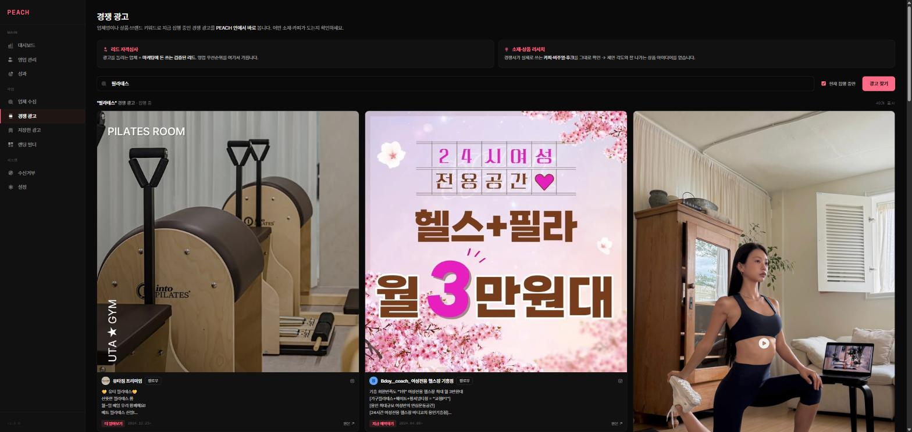
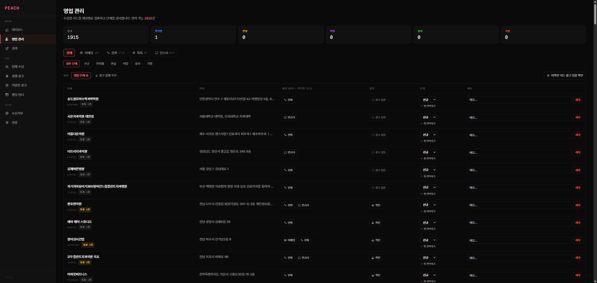
연락처가 있는 순서 · 최근 수집 순서
광고 집행 여부 - 실제 연락 채널 - 영업 단계
AUTOMATE THE SEARCH, KEEP THE CONTACT HUMAN
PEACH는 업체를 찾고 연락 가능한 채널을 보강하며 우선순위를 정리하는 데까지 자동화합니다.
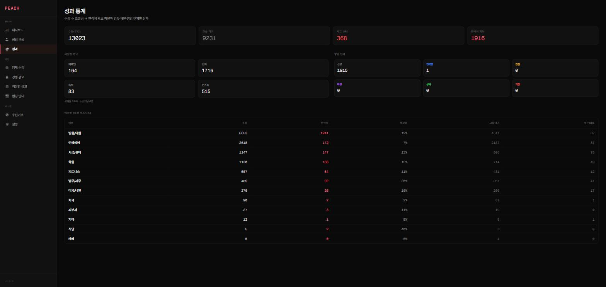
BUSINESS DATA업체명과 연락처는 사용자의 로컬 SQLite에 저장합니다.
ANONYMOUS STATS수집 건수 같은 익명 통계는 사용자가 동의한 경우에만 별도로 전송합니다.
CONTACT어떤 채널로 어떤 말을 건넬지는 사용자가 결정합니다.
THE SECOND BOTTLENECK
실제로 만들었던 시안 6종을 요소 단위의 문서 모델로 분해해 시작점으로 사용했습니다.
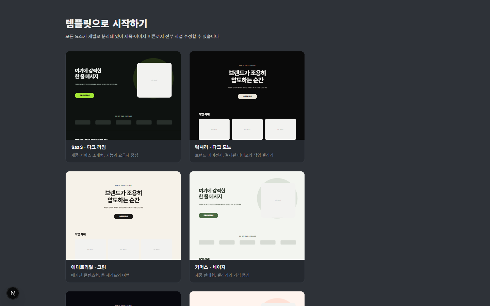
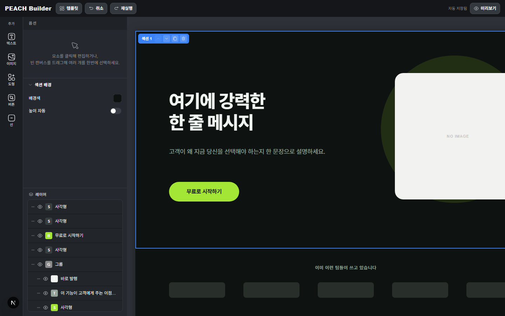
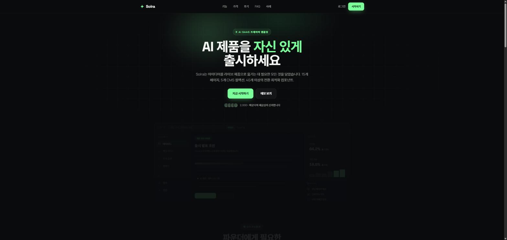
초기localStorage 용량과 실행 주소에 따라 작업물이 갈림
현재문서는 SQLite, 이미지는 로컬 파일로 저장
WHAT I REMOVED
리드 발굴을 자동화하는 것과 관계 맺기까지 대신하는 것은 다른 문제라고 판단했습니다.
업체 수집
리디자인
자동 배포
콜드메일 자동 발송
업체 수집
우선순위 판단
제안 자료 준비
사람이 직접 접촉
도구는 연락할 곳과 근거, 제안 자료를 준비하는 데서 멈춥니다.
수집 13,023건 · 연락처 확보 1,916건을 실제 데이터로 운영했습니다.
우선순위가 실제 영업 결과로 이어지는지 확인해야 합니다.
ONE-WEEK EXPERIMENT
아이디어 원문에서 기획 문서까지 자동으로 만드는 방식을 일주일 동안 실험했습니다. 문서, 명령어, 훅, 내부 에이전트, 검사기, 수치화된 체크리스트까지 붙였지만 결과는 실패였습니다.
0완성 제품
22게이트
18검사
6러너
0검사기가 화면 품질을 잡은 사례
사람의 방향 확인은 마지막 화면에서야 일어났습니다.
규칙이 부족한 것이 아니었습니다. 모델이 앞선 문서를 건너뛰거나 줄어든 컨텍스트로 다음 단계를 만들었고, 사람이 중간 결과를 직접 고칠 작업공간이 없었습니다.
HUMAN DECISION INSIDE EACH STAGE
잘못된 방향을 마지막에 발견하면 앞 단계 전체가 다시 비용이 됩니다. 판단권을 각 단계 안으로 가져왔습니다.
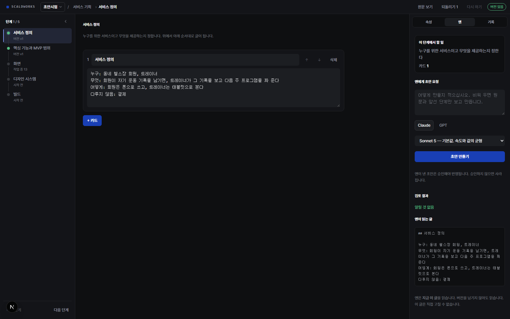
두 모델이 같은 답을 냈다고 자동 채택하지 않습니다. 같은 오류를 낼 수 있고, 한 모델만 낸 제안이 더 나을 수도 있기 때문입니다.
시스템은 합의 여부와 차이를 보여주고 최종 결정은 사람이 내립니다.
모델 선택 UI와 설계 원칙은 반영됐지만, 두 모델 전체 비교 루프의 반복 검증은 아직 끝나지 않았습니다.
FROM FOUR DOCUMENTS TO ONE SCREEN FRAME
메뉴 구조, 화면 목록, 유저플로우, 와이어프레임이 서로 다른 객체로 저장되며 이름과 상태가 어긋나는 문제를 줄였습니다.
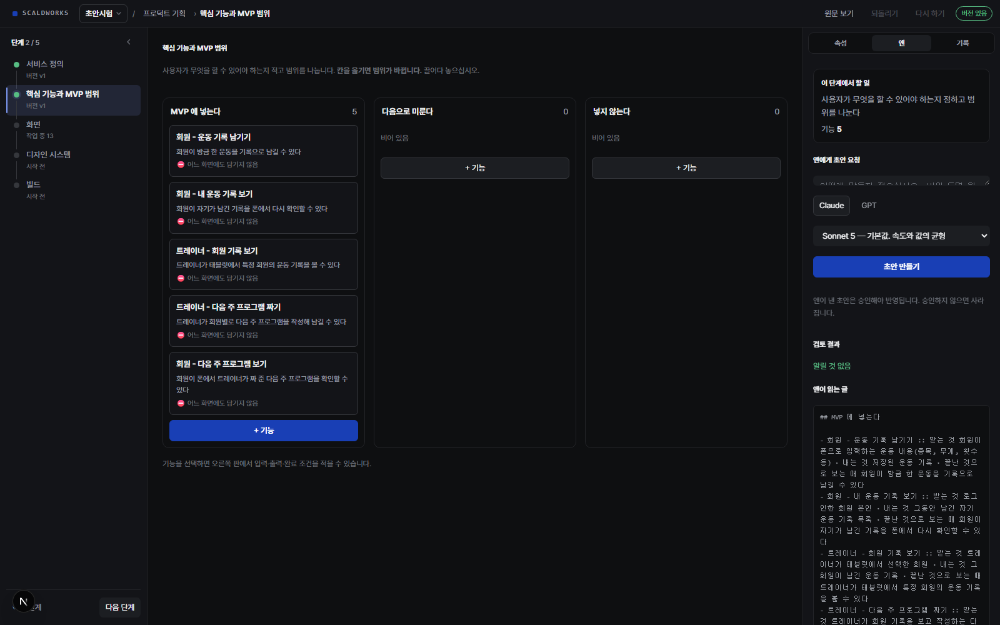
‘화면 프레임’을 정본으로 두고 메뉴 선과 흐름 선을 그 위에 겹칩니다. AI는 별도 문서를 추측하지 않고 사람이 그린 프레임을 읽습니다.
MVP 기능이 어느 화면에도 없으면 경고
정의되지 않은 역할과 연결되지 않은 화면을 숨기지 않음
데스크톱 1440×900 / 모바일 390×844 기준
VERSION IS A PLACE TO RETURN
저장된 화면인데 ‘확정’ 버튼을 누르지 않아 AI가 읽지 못하는 모순을 제거했습니다.
READAI는 항상 현재 상태를 읽습니다.
PROPOSE캔버스를 덮어쓰지 않고 수정안을 만듭니다.
PREVIEW변경 전후를 사람이 확인합니다.
APPROVE승인한 수정안만 반영합니다.
RECOVER버전은 이전 상태로 돌아갈 스냅샷입니다.
CONNECTED, NOT FINISHED
홈, 단계 흐름, 화면 편집기는 같은 시각 언어로 연결됐고 샘플 제품의 13개 화면과 29개 출력 파일을 읽어 냅니다.
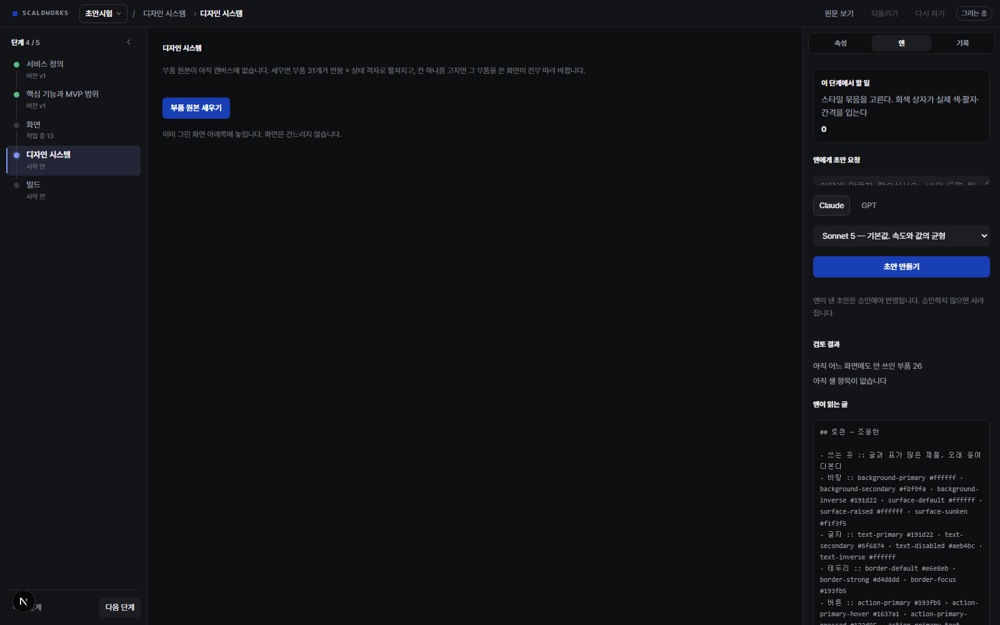
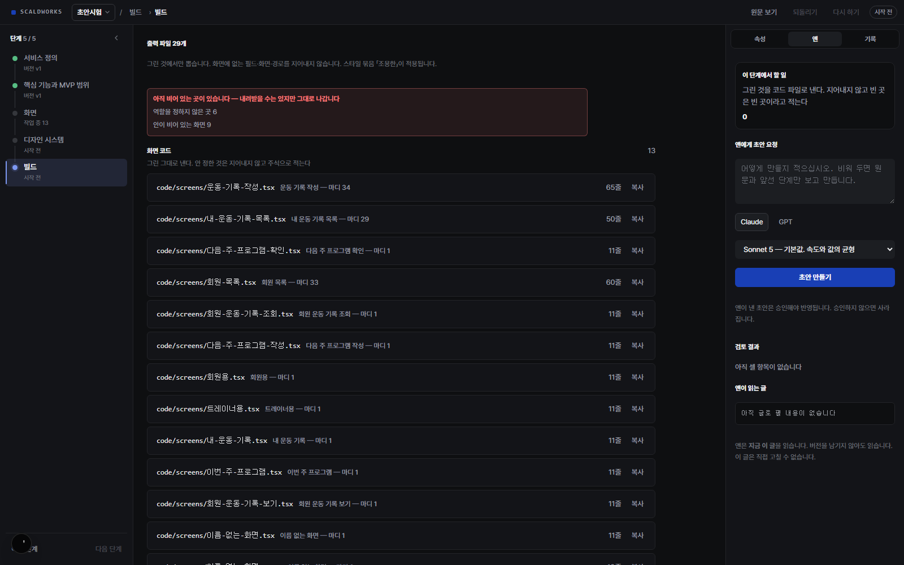
캔버스에서 사용된 디자인 시스템 원본 0개
코드에 정의됐지만 원본으로 연결되지 않은 컴포넌트 31개
원본의 변형·상태 축과 원본 - 화면 전파 미검증
두 모델 전체 비교 루프의 반복 실사용 판정 대기
SCALDWORKS의 성과는 자동 생성량이 아닙니다. AI가 어디까지 만들고 사람이 어디서 판단해야 하는지를 실패를 통해 제품 구조로 바꾼 과정입니다.
SERVICE · PRODUCT · AX PLANNING
사용자 조사에서 현장 운영까지, 기능을 더하는 일뿐 아니라 무엇을 빼고 어디에서 사람이 결정해야 하는지를 함께 봅니다.
문제 정의 · 정보구조 · 사용자 흐름 · MVP 범위
정책 · 운영 프로세스 · 예외 처리 · 이해관계자 문서
탐색 · 선택 · 구매 구조 · CAFE24 구축과 운영
LLM 비교 · 승인 · 복구 · 자동화 경계 설계